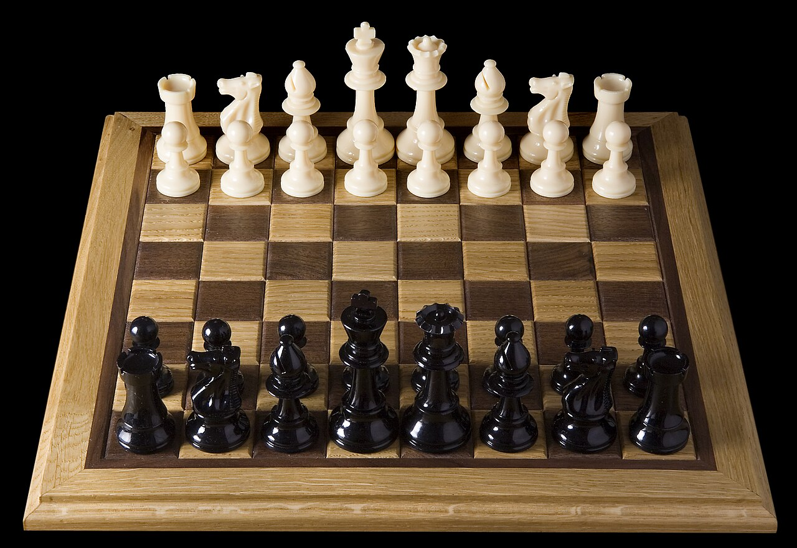
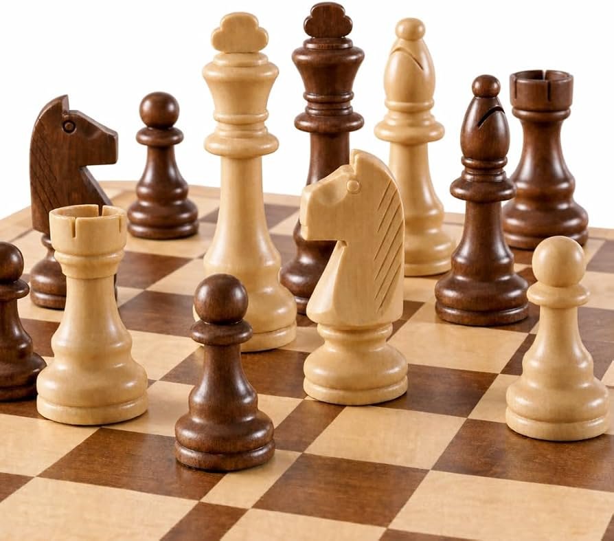
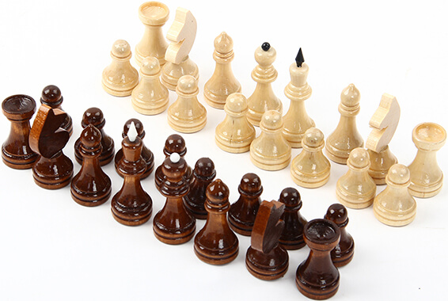

Шахи виникли багато століть тому, а їхнім найдавнішим відомим попередником вважають
індійську гру чатурангу. Вона сформувалася приблизно у VI столітті нашої ери на території
Індії. У чатуранзі використовувалися фігури, які символізували різні частини давньої армії: піхоту,
кінноту, бойових слонів і колісниці. Гра поступово поширилася за межі Індії та потрапила до Персії.
Перси змінили деякі правила та називали гру шатрандж. Після завоювання Персії арабами шатрандж поширився
на Близькому Сході та в Північній Африці. Згодом гра потрапила до Європи через Іспанію та інші регіони
Середземномор'я. У різних країнах правила поступово змінювалися, наближаючи гру до сучасних шахів.

У середньовічній Європі шахи стали популярною грою серед представників різних суспільних верств.
Спочатку деякі фігури пересувалися значно слабше, ніж у сучасних шахах. Приблизно наприкінці XV
століття правила почали суттєво змінюватися. Ферзь отримав значно більшу свободу пересування і став
найсильнішою фігурою на дошці. Слон також отримав можливість переміщуватися по всій довжині діагоналі.
Ці зміни зробили партії швидшими, динамічнішими та більш тактично насиченими. Поступово в різних країнах
встановлювалися більш-менш однакові правила гри. Саме ці правила стали основою сучасних міжнародних шахів.

У XIX столітті шахи перетворилися на організований вид змагань із турнірами та офіційними правилами.
У 1886 році відбувся матч між Вільгельмом Стейніцом та Йоганном Цукертортом, який часто називають першим
офіційним матчем на звання чемпіона світу. У 1924 році була заснована Міжнародна шахова федерація FIDE, яка займається
організацією та розвитком міжнародних шахів. Чемпіонати світу поступово стали одними з найвідоміших шахових змагань.
У XX столітті шахи активно розвивалися завдяки появі нових методів підготовки, шахової теорії та комп'ютерних програм.
Наприкінці XX століття комп'ютери вже могли грати на дуже високому рівні та аналізувати величезну кількість варіантів.
Сьогодні шахи доступні мільйонам людей завдяки онлайн-платформам, мобільним застосункам і цифровим шаховим програмам.
Водночас основні правила сучасної гри залишаються результатом багатовікового розвитку, який розпочався ще з давніх
стратегічних ігор Індії.
